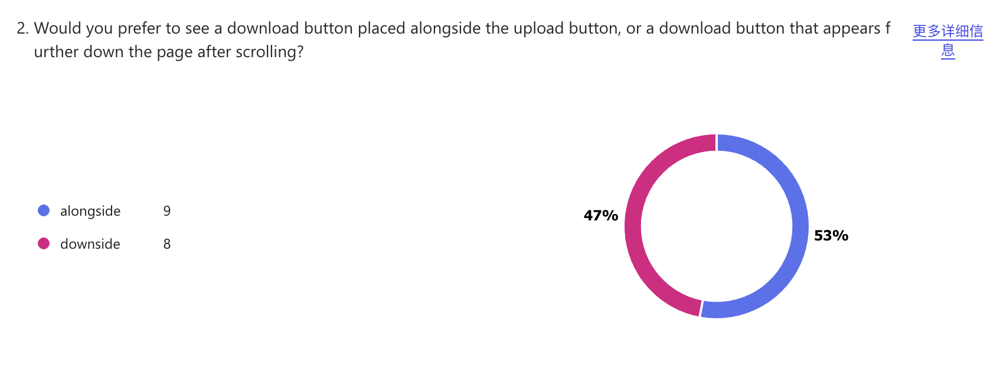

Studio Work Index
Cecile Yang
S4121253
Assignment1
Introduction Exercise
Hi, my name is Cecile, I grew up in China and now studying at Melbourne.
I chose digital media as I'm interested in 3d modelling and UI design. I like using photoshop to edit pictures and draw.
I know a little bit about HTML and CSS.
Link to my GitHubIn-class experiment
Studio project speculation
Framing
My initial idea was to create a website based on something I am personally interested in and can enjoy. Although it may seem trivial, I found the brainstorming stage quite difficult—simply trying to define what counts as a “creative website” in a general sense felt almost impossible to me. So I shifted my approach and decided to start from a field I am passionate about, aiming to build a website that would also appeal to communities deeply engaged with fan-created content. The website is designed to generate derivative images. Users can upload images online, and the site will provide various filter tools, along with combinable elements such as stickers and frames. Based on the user’s preferences, the image can be processed and assembled into a final result. This result might be a newly composed image enhanced with cute stickers and frames, or even a new page resembling a “match success” screen from a chat application. In terms of functionality, the website needs to support image uploading, free selection of image areas, filter-based editing, and the ability to combine images with stickers and frames.
Purpose & Worth
The purpose of creating this website is to offer something engaging and useful for users who have original characters (OCs) or are fans of specific works. As we know, not everyone has the ability to draw, nor is everyone willing to use professional image-editing software to realize their ideas. While mobile editing apps are convenient, they are often filled with advertisements, and many appealing assets require paid subscriptions. These conditions highlight the advantages of this website: it is free (at least for now), browser-based, easy to access, ad-free, and efficient. Additionally, I am confident in my sense of online trends, so the assets provided on the site can match—or even exceed—the quality and trendiness of those found in typical editing apps. Based on its functionality, the website allows users with limited artistic skills, or those unwilling to use complex tools, to more easily obtain the images they want. In this context, “desired images” can also be understood as a form of emotional or imaginative fulfillment. While some may find this difficult to relate to, customizing images of favorite characters often leads to unexpected results and a strong sense of satisfaction. In terms of user experience, I hope users can encounter current popular elements on the website, such as meme-inspired stickers or comic-style panel frames, which would naturally appeal to highly active internet users. Since user-uploaded images may clash stylistically with the provided assets, I plan to use filters to unify the visual style and ensure better coherence in the final composition. In addition, I aim to enhance responsiveness and engagement through more dynamic and playful interface interactions, such as incorporating fun button sound effects, drag-and-drop functionality for arranging stickers, and creatively designed buttons. Overall, I hope users will perceive the website as trendy, slightly chaotic in a fun way, and fresh and engaging.
Assignment2
External links
Conceptual Response
At this stage, my project theme remains an “image editor.” The project is developed as a web-based application. Its visual design is inspired by Japanese fashion magazines from the 1990s, while its functional features draw from contemporary beauty editing applications. In simple terms, I aim to combine a retro Japanese magazine aesthetic with engaging, modern editing functions to create a unique image editing experience.
I plan to structure the interface to resemble a magazine cover layout. For example, buttons will be presented in different colours, and tilted typography will be used to mimic the small slogans or headlines commonly seen on magazine covers, while the central canvas represents the main featured image.
To achieve this, I need to consider both information design and mapping principles. Magazine covers are designed to be visually striking and often contain multiple focal points rather than a single clear hierarchy. However, directly replicating this style may lead to visual fatigue and make it difficult for users to navigate the core functions of the website effectively. Therefore, I aim to adjust these focal points by introducing a sense of hierarchy, while also using this hierarchy to guide user interaction. For example, the download button may be slightly smaller than the upload button to indicate its secondary priority.
In summary, I believe the key innovation of this project lies in how the visual language of 1990s Japanese magazines is expressed and reinterpreted. In addition, I also aim for the interaction experience to align with the visual style. For instance, I plan to incorporate neon-like glow effects into button interactions, as neon lighting is a well-recognised feature of Japanese urban environments. For interaction sound design, I am considering using sounds similar to the fizzing of beer, which evokes the atmosphere of izakaya culture. I also plan to include small animations inspired by 1990s Japanese variety shows after an image is downloaded, along with a “well done” voiceover delivered in the tone of a variety show host.
Technical Approach
The core features of this project include image uploading and downloading, real-time image editing, the application of filters, and the addition and editing of sticker elements. The project is primarily implemented using HTML, CSS, and JavaScript, and it incorporates Konva.js as its main framework. According to its official documentation, Konva.js is used for building interactive 2D graphics, and its capabilities include functions such as drag-and-drop image manipulation, cropping, and applying filters, which fully align with the requirements of this project.
Peer User Testing Reflection
In the testing phase, the questions I asked were quite specific, such as whether certain interface elements were large enough, or whether interactive sound effects should be added. One of the most interesting pieces of feedback I received came from a question about button placement. I asked users whether they preferred the button to be positioned at the top or the bottom of the interface, and the responses turned out to be evenly split.

I think this suggests that such design decisions have a high degree of flexibility. Although different users may have different preferences, as long as it does not go beyond users’ intuitive expectations, the position of the buttons can be adjusted and optimised according to the visual requirements of the magazine-inspired style. Based on other questions and feedback, the main aspect that needs improvement at this stage is the size of the image editing area. In addition, more interesting and engaging interactive experiences should be added and enhanced.
Project Timeline
| Week | Task |
|---|---|
| Week 8 | Complete most of the core features |
| Week 9 | Do layout design & interaction |
| Week 10 | Continue development and testing |
| Week 11 | Final testing |